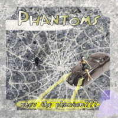

Phantoms - Who's The Phantom? (Album, 2005)
01 - Brand New Cadillac (3:14)
02 - You Oughta See Grandma Rock (2:21)
03 - All I Can Do Is Cry (2:08)
04 - One Cup Of Coffee (1:59)
05 - Everybody's Movin' (2:41)
06 - Love Me (1:50)
07 - She Said Goodbye (Version One) (2:41)
08 - Let's Bop (2:06)
09 - Long Gone Daddy (2:34)
10 - Say When (2:41)
11 - Sixteen Chicks (1:56)
12 - Slow Down (2:10)
13 - Blue Blue Day (1:46)
14 - Tired And Sleepy (1:49)
15 - Dateless Night (2:24)
16 - Red Cadillac And A Black Moustache (3:05)
17 - Rockin' And Flyin' (2:16)
18 - She Said Goodbye (Demo) (2:33)
© TCY-Records :: [TCY-002]
Notes
Review
081/366 (Project 366)
Lovely sound of good old time Rockabilly sound and own rockin' and rollin' way of performing songs.